Edgy Eft
Ubuntu 6.10 "Edgy Eft" ist der Nachfolger von Ubuntu 6.06 LTS "Dapper Drake" und erschien am 26. Oktober 2006. Im Gegensatz zu "Dapper Drake" mit LTS (Long Term Support) war Edgy ein eher experimentelles Release, was bedeutete, dass die Programmersteller die allerneusten Features einbauen konnten, die noch nicht auf jedem Rechner getestet wurden. Als Nachfolger wurde am 19. April 2007 Feisty Fawn veröffentlicht.
"Nach dem vorherigen Release, bei dem die Stabilität oberste Priorität hatte und auf neue technische Spielereien verzichtet wurde, rief Mark Shuttleworth für Ubuntu 6.10 die Entwickler auf, sich dort auszutoben. So klangen die Ankündigungen für diese Version sehr vielversprechend. Die Version mit dem Namen „Edgy Eft“ (zu deutsch „Nervöser Molch“) sollte „bleeding edge“ sein, also das Neueste vom Neuesten enthalten." Quelle

Basisdaten¶
| Ubuntu 6.10 | |
| Basisdaten | |
| Codename: | Edgy Eft |
| Deutsche Übersetzung: | Nervöser Molch |
| Status: | nicht mehr unterstützt |
| Angekündigt am: | 19. April 2006  |
| Erschienen am: | 26. Oktober 2006 |
| Unterstützt bis: | 25. April 2008 |
| Versionen: | Ubuntu, Edubuntu, Kubuntu, Xubuntu |
| Architekturen: | x86, PowerPC und AMD64 |
| Medien: | Alternate-CD, Desktop-CD und DVD |
| « Zeitleiste » | « Dapper Drake ... Edgy Eft ... Feisty Fawn » |
Neuerungen¶
generic-Kernel¶
Die von Dapper gewohnten angepassten Kernel für Intel- und AMD-Architektur wie 686, k7 oder amd64-k8 sind verschwunden und es gibt neben dem 386er Kernel für Pentium I und frühere Prozessoren nur noch einen generic-Kernel (bzw. amd64-generic) für alle Architekturen, welche die bestmöglichen Einstellungen von selbst wählen. Siehe auch hier .
Dash statt Bash¶
Unter "Edgy Eft" wird standardmäßig Dash anstatt Bash genutzt (siehe Shell). Das bedeutet, dass der Link /bin/sh auf /bin/dash zeigt und nicht mehr auf /bin/bash. Das Problem ist, dass viele Skripte und Installer immer noch die Bash erwarten und nur damit richtig funktionieren. In solchen Fällen muss das Skript so angepasst werden, dass in der ersten Zeile nicht mehr #!/bin/sh, sondern #!/bin/bash steht.
UUIDs¶
In der Datei /etc/fstab werden zum Einbinden der Partitionen nur noch die UUIDs benutzt, anstelle der herkömmlichen Datenträger-Bezeichnungen. Dies macht aber sehr oft Probleme, vor allem beim Einbinden der swap-Partition (siehe hier ). Man kann unter Edgy aber ganz einfach auch die normalen Bezeichnungen anstelle der UUIDs in der fstab ersetzen.
apt-get autoremove¶
apt-get ist nun in der Lage, einmal durch Abhängigkeiten automatisch installierte Pakete und nach Deinstallation des "Hauptpaketes" nicht mehr gebrauchte Pakete automatisch zu deinstallieren. In diesem Beispiel ist der Vorgang dokumentiert.
Upstart¶
Upstart löst Init als Automatismus das System und Dienste zu starten ab. Dabei arbeitet Upstart ereignisgesteuert und nicht mehr stur nach Runlevel, wobei ein Dienst oder System nacheinander gestartet wird. Dadurch startet z.B. der X Server nicht mehr als letzter Dienst und das System ist spürbar schneller "da", obwohl im Hintergrund noch Dienste gestartet werden können.
Neuer X Server¶
Als X Server wird der neue Xorg 7.1 benutzt. Dies ist vor allem für die Benutzer eines Intel-Grafikchips und die Benutzer einer Nvidia-Grafikkarte (mit dem neuen Beta-Treiber) interessant, da diese Version AIGLX integriert hat und man somit nur noch Beryl/Compiz installieren muss, um in den Genuss von 3D-Effekten auf dem Desktop zu kommen.
Neuerungen in GNOME¶
Anwendungen hinzufügen/entfernen (GAI)¶
| Die Ergebnisse des anonymen Ubuntu Popularity Contest werden nun im Anwendungs-Installationsprogramm angezeigt. Man kann nun erkennen, welche Programme gerne installiert werden und kann so - auch ohne die Programme mit Namen zu kennen - sehen, welche Programme es wert sind, ausprobiert zu werden. | 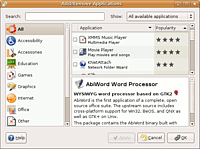 |
Audio-Einstellungen¶
| In den GNOME-Audio-Einstellungen "System -> Einstellungen -> Audio" kann man nun unterschiedliche Audiogeräte für verschiedene Audio-Ereignisse definieren. | 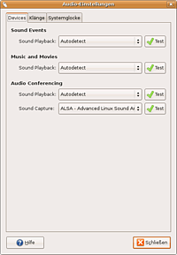 |
Baobab¶
| Mit Baobab erhält GNOME ein Werkzeug, um die Ausnutzung des Festplattenplatzes übersichtlich zu analysieren und so große Dateien aufzuspüren. | 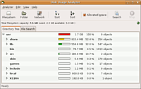 |
Bug Buddy¶
| GNOME 2.16 hat ein Programm bekommen, das Informationen über ein abgestürztes Programm an die Entwickler schicken kann. Der Anwender kann selber entscheiden, ob Informationen nach einem Absturz verschickt oder verworfen werden sollen. | 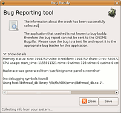 |
Desktop-Suche¶
| Die Desktop-Suche wurde noch weiter ergänzt. So wurde das Deskbar-Applet modifiziert, ebenso wie die Desktop-Suche aus Nautilus heraus. Die Suchmaschine Beagle, die im Hintergrund arbeitet, kann jetzt auch Mozilla Thunderbird-Emailprofile durchsuchen | 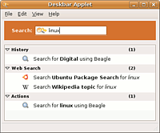 |
| 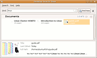 |
Druckdialog¶
| Der Druckdialog wurde komplett überarbeitet. Viele GNOME-Benutzer haben über das Fehlen erweiterter Funktionen geklagt. Nun sind sie da. Duplex-Druck, mehrere Seiten pro Blatt drucken usw. Man vermisst eigentlich keine Funktionen mehr. | 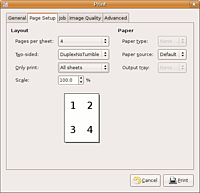 |
Energie-Verwaltung¶
| Die Energieverwaltung, also der gnome-power-manager wurde deutlich überarbeitet. Neben einigen optischen Änderungen, bietet die Energieverwaltung nun Statistiken und Hochrechnung über den Akku-Zustand des Rechners. | 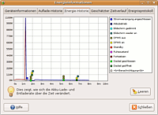 |
Evolution¶
| Die auffälligsten Änderungen sind sicherlich die dreispaltige Emailansicht, wie man sie aus Thunderbird und Outlook her kennt und der Kalender, dessen Objekte per Drag&Drop aufgezogen werden und die nun per Cairo gezeichnet werden. | 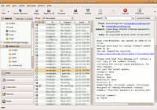 |
F-Spot¶
| F-Spot ist ein Programm zur Verwaltung der eigenen Photosammlung für GNOME, das mit GNOME 2.16 in die GNOME-Desktop Umgebung aufgenommen wurde. F-Spot kann mit großen Bildersammlungen umgehen und bietet über den Zeitstrahl schnelle Übersicht über die eigene Bildersammlung. | 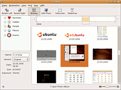 |
gedit¶
| gedit wurde leicht überarbeitet. So erhielt gedit nun eine Seitenleiste mit einem Dateibrowser. Ansonsten wurde nur die Hilfe überarbeitet und Übersetzungen ergänzt. | 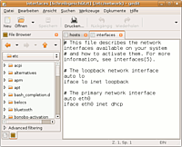 |
Nautilus¶
| In GNOME 2.16 wird es möglich sein, Datei-Rechte rekursiv aus Nautilus heraus zu setzen, was bisher ein schmerzlich vermisstes Feature war. Diese Funktion lässt sich schon begutachten. | 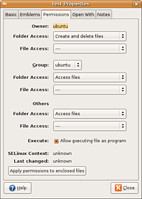 |
Screensaver¶
| Der GNOME-Screensaver besitzt nun eine Vorschau-Funktion. Aktiviert man diese, bekommt man den ausgewählten Bildschirmschoner in einem Vollbild demonstriert. | 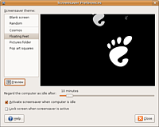 |
Tomboy¶
| Tomboy ist ein Desktop-Wiki-System, das einfach zu verwalten und zu benutzen ist. Notizen können als "Post-It Notes" geschrieben und die Einträge untereinander verlinkt werden. | 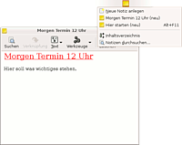 |
Neuerungen in Ubuntu¶
Paketquellen freischalten¶
| Ubuntu 6.10 "Edgy Eft" verfügt nun über einen Dialog im Systemmenü, über den man sehr einfach die unterschiedlichen Paketquellen (multiverse/universe usw.) aktivieren bzw. deaktivieren kann. Damit dürfte es neuen Ubuntu-Benutzer deutlich leichter fallen Paketquellen hinzuzufügen. | 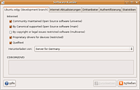 |
Gaim 2¶
| Edgy setzt auf das sich noch in der Entwicklung befindliche Gaim 2.0 beta 3.1. Diese Version läuft äußerst stabil. Leider bringt Gaim 2.0 noch keine Unterstützung für Audio- und Video-Chats mit. | 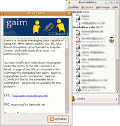 |
Openoffice.org 2.0.4¶
| Edgy Eft enthält die aktuellste Version von OpenOffice.org. Kritische Sicherheitslecks wurden geschlossen, der deutschsprachige Thesaurus verbessert, und kleine Änderungen an der Oberfläche bewirken, dass sich OpenOffice.org besser bedienen lässt. | 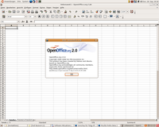 |


- Erstellt mit Inyoka
-
 2004 – 2017 ubuntuusers.de • Einige Rechte vorbehalten
2004 – 2017 ubuntuusers.de • Einige Rechte vorbehalten
Lizenz • Kontakt • Datenschutz • Impressum • Serverstatus -
Serverhousing gespendet von